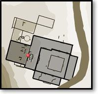

The New Temple
 At some time after the completion of the Old Temple, a new temple was constructed, partially incorporating part of the Old Temple, but extending south and east. Perhaps because it was to be on a larger scale, the builders chose not to add to the existing temple, burying it under a new and larger facade, but rather to shift its center and axis. They did retain a U shape, with large flanking mounds extending to the edge of the Mosna River. By exploring the New Temple you will see important similarities and differences with Old Temple architecture and construction.
Explore the New Temple